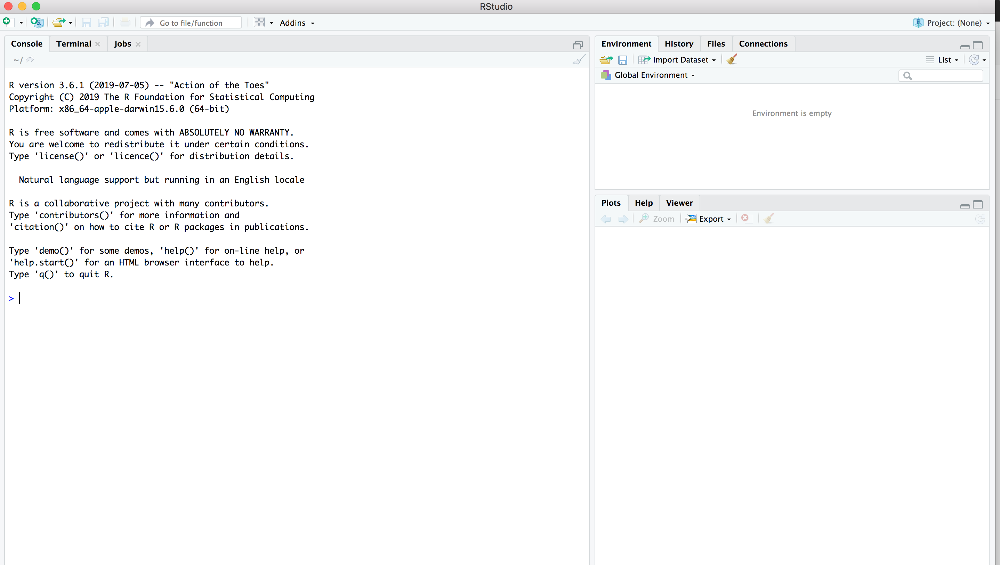
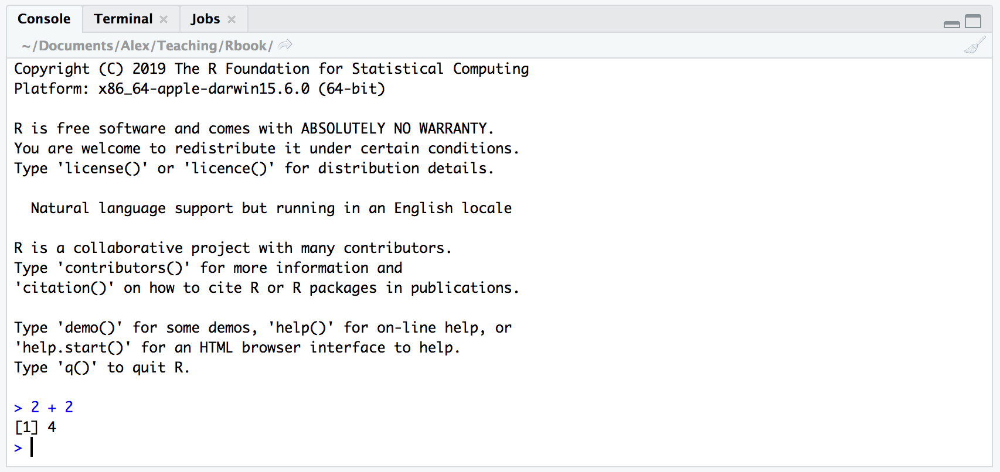
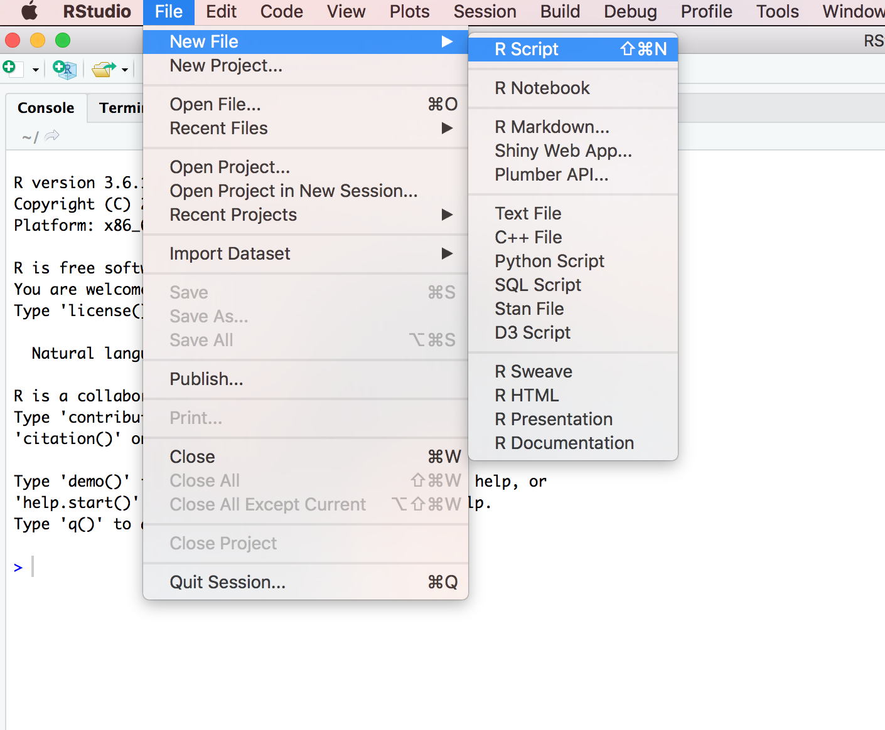
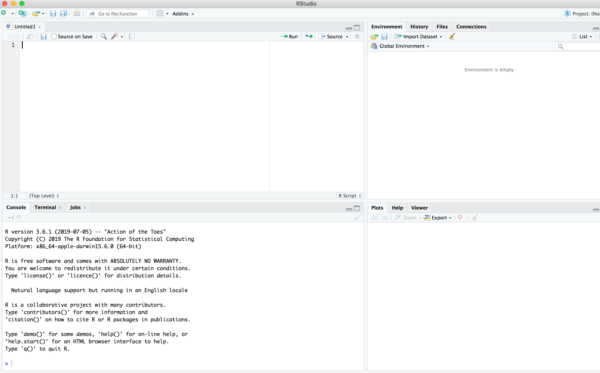
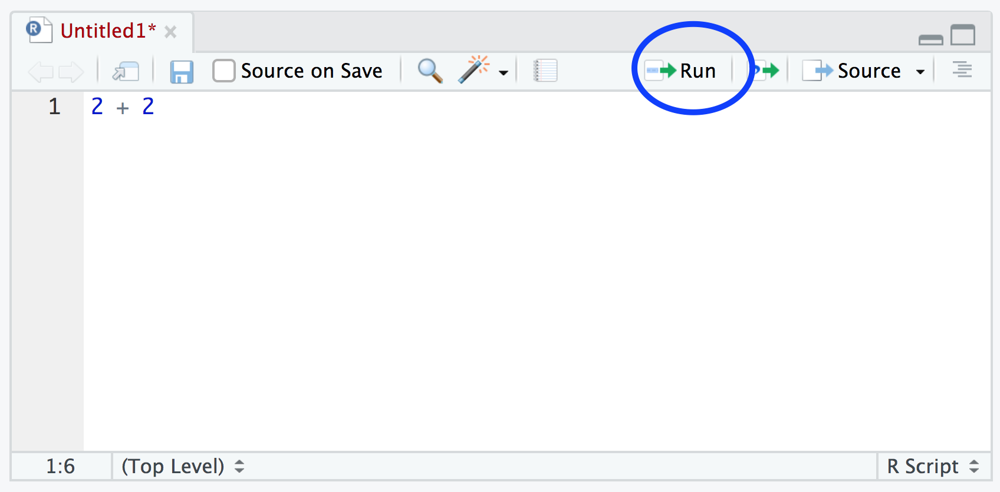

1.4 RStudio orientation
When you open R studio for the first time you should see the following interface:

The large window (aka pane) on the left is the Console window. The window on the top right is the Environment / History / Files pane and the bottom left window is the Plots / Help / Viewer window. We will discuss each of these panes in turn below. You can customise the location of each pane by clicking on the ‘Tools’ menu then selecting Global Options –> Pane Layout. You can resize the panes by clicking and dragging the middle of the window borders in the direction you want.
1.4.1 Console
The console is the workhorse of R. This is where R evaluates all the code you write and stores all the objects (data for example) you create. You can type R code directly into the console at the command line prompt, >. For example, if you type 2 + 2 into the console you should obtain the answer 4 (reassuringly). Don’t worry about the [1] at the start of the line for now.

However, once you start writing more R code this becomes rather cumbersome. Instead of typing R code directly into the console a better approach is to create an R script. An R script is just a plain text file with a .R file extension which contains your lines of R code. These lines of code are then sourced into the R console line by line. To create a new R script click on the ‘File’ menu then select New File –> R Script.

Notice that you have a new window (called the Source pane) in the top left of RStudio and the console is now in the bottom left position. The new window is a script editor and where you will write your code.

To source your code from your script editor to the console simply place your cursor on the line of code and then click on the ‘Run’ button in the top right of the script editor pane.

You should see the result in the console window. If clicking on the ‘Run’ button starts to become tiresome you can use the keyboard shortcut ‘ctrl + enter’ (on Windows and Linux) or ‘cmd + enter’ (on Mac). You can save your R scripts as a .R file by selecting the ‘File’ menu and clicking on save. To open your R script in RStudio select the ‘File’ menu and then ‘Open File…’. Although R scripts are saved with a .R extension they are actually just plain text files which can be opened with any text editor.
A quick note or two about R scripts. Unless you’re doing something really quick and dirty I suggest that you always write your code as an R script. R scripts are what make R so useful. Not only do you have a complete record of your analysis, from data manipulation, visualisation and statistical analysis, you can also share this code (and data) with friends, colleagues and importantly when you submit and publish your research to a journal. With this in mind, make sure you include in your R script all the information required to make your work reproducible (author names, dates, sampling design etc). This information could be included as a series of comments # or, even better, as code incorporated with commentary into an R markdown document. How you write your code is more or less up to you although your goal should be to make it as easy to read as possible. You can find a few style guides for writing readable R code here and here
1.4.2 Environment / History / Files
The Environment / History / Files window shows you lots of useful information. You can access each component by clicking on the appropriate tab in the pane.
The ‘Environment’ tab displays all the objects you have created in the current (global) environment. These objects can be things like data you have imported or functions you have written. Objects can be displayed as a List or in Grid format by selecting your choice from the drop down button on the top right of the window. If you’re in the Grid format you can remove objects from the environment by placing a tick in the empty box next to the object name and then click on the broom icon. There’s also an ‘Import Dataset’ button which will import data saved in a variety of file formats. However, I would suggest that you don’t use this approach to import your data as it’s not reproducible and therefore not robust (see Chapter 3 for more details).
The ‘History’ tab simply contains a list of all the commands you have entered into the R console. You can search back through your history for the line of code you have forgotten, send selected code back to the console or Source window. I usually never use this as I always refer back to my R script.
The ‘Files’ tab lists all external files and directories in the current working directory on your computer. It works like file explorer (Windows) or Finder (Mac). You can open, copy, rename, move and delete files listed in the window.
1.4.3 Plots / Help / Viewer
The ‘Plots’ tab is where all the plots you create in R are displayed (unless you tell R otherwise). You can ‘zoom’ into the plots to make them larger and scroll back through previously created plots using the arrow buttons. There is also the option of exporting plots to an external file using the ‘Export’ drop down menu. Plots can be exported in various file formats such as jpeg, png, pdf, tiff or copied to the clipboard (although you are probably better off using the appropriate R functions to do this - see Chapter 4 for more details).
The ‘Help’ tab displays the R help documentation for any function. We will go over how to view the help files and how to search for help in Chapter 2.
The ‘Viewer’ tab displays local web content such as web graphics generated by some packages.